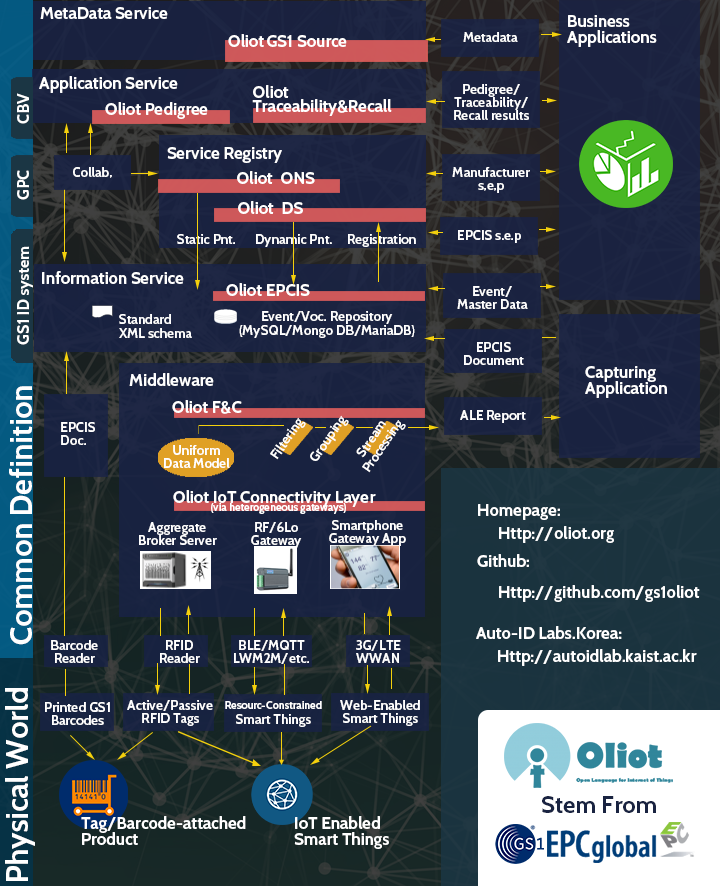

The term Internet of Things was firstly introduced in 1999 by Kevin Ashton at the Auto-ID Labs, MIT (http://www.autoidlabs.org), which is the primary research partner of GS1.

Oliot is aiming an international standard based Internet of Things (IoT) Infrastructure Platform, by extending the code system of GS1 and their standard architecture to support various IoT connectivity and protocols such as bar code, 2D DataMatrix, QR Code, RFID, ZigBee, 6Lo, Bluetooth Low Energy, OneM2M, OCF, etc. Oliot also aims a complete implementation of GS1/EPCglobal standard.
The name of this project, Oliot is the abbreviation of Open Language for Internet of Things. Also, oliot is the plural form of olio, which means thing or object in Finnish, and means stew of various meats and vegetables in Spanish.
The term Internet of Things was firstly introduced in 1999 by Kevin Ashton at the Auto-ID Labs, MIT (http://www.autoidlabs.org), which is the primary research partner of GS1.
GS1 provides various types of codes such as bar code, RFID, 2D DataMatrix code for thing identification, and standardizing system infrastructure for global business and applications (Transport & Logistics, Retail, Healthcare, Fresh Food, Technical Industry, Financial Service, etc.).
GS1 is making an effort to hold the position of a standard technology for IoT era as well as B2C from B2B via GS1 code extension, GS1 digital, and IoT standard technology development.
Among seven Auto-ID Labs (MIT, Cambridge, ETH Zurich, Keio, Fudan, Adelaide, KAIST) over the world, Auto-ID Labs, KAIST started research and development in IoT field since 2003, starting from the RFID and wireless sensor network technology. And since 2005, we started to develop various IoT technologies that are specialized to GS1 standard.
Oliot is maintained by Auto-ID Labs, KAIST, in Daejeon, Korea.
Related works of this project were funded or aided by following organizations.
Oliot is distributed under Apache License, Version 2.0. For ONS, we open it with Apache license so that users can use it without any restriction. That is because Oliot-ONS consists of the DNS configuration files to implement ONS.